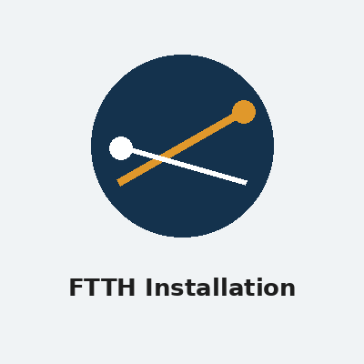
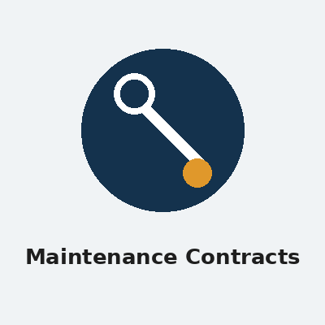

Our Services
Electrical and fibre expertise under one roof.
Electrical Installations & Fault-Finding
From a single faulty circuit to a full distribution-board upgrade, our registered electricians handle residential and small-commercial electrical work end to end, and issue a Certificate of Compliance (CoC) once the job passes inspection.
- Certificate of Compliance (CoC) inspections and issuing
- Distribution board (DB) upgrades and rewiring
- Fault-finding and emergency call-outs
- New-build and renovation electrical installations

FTTH Installation
We install fibre connections for homeowners, estates and small businesses, following SANS 10198 optical fibre cabling guidelines from the initial site survey through to a working, tested connection.
- End-to-end Fibre-to-the-Home installation for houses, complexes and estates
- Fibre splicing, termination and testing in line with SANS 10198 guidelines
- Router and ONT (Optical Network Terminal) setup
- Fault repair and re-splicing for existing fibre connections

Maintenance Contracts
For estates and businesses that want to avoid unexpected downtime, we offer ongoing maintenance agreements covering both the electrical and fibre-network side of a property, with a single point of contact for both.
- Scheduled electrical safety inspections for estates and businesses
- Ongoing fibre-network health checks and preventative maintenance
- Priority call-out response for contract clients
- Custom maintenance packages based on site size and needs